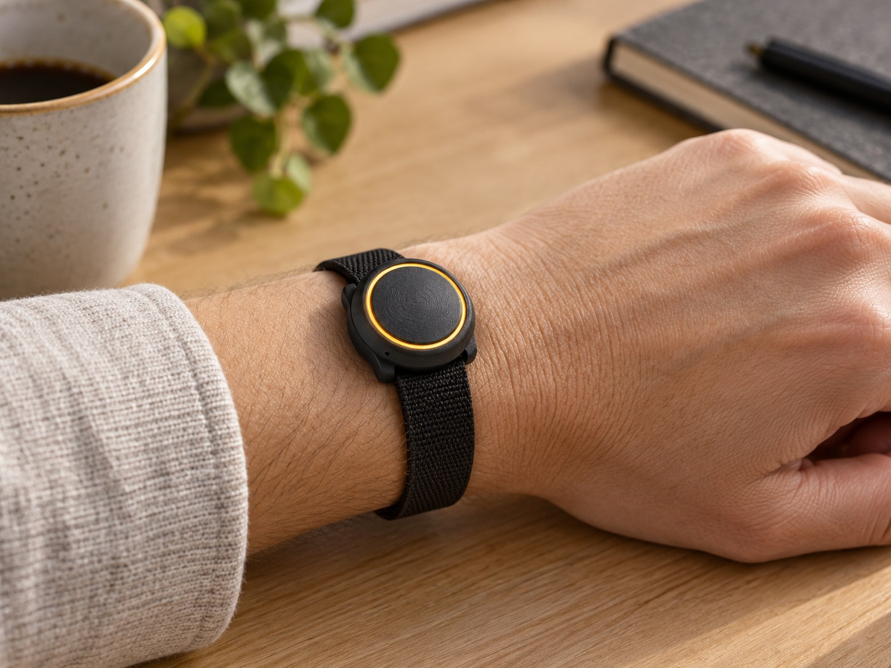
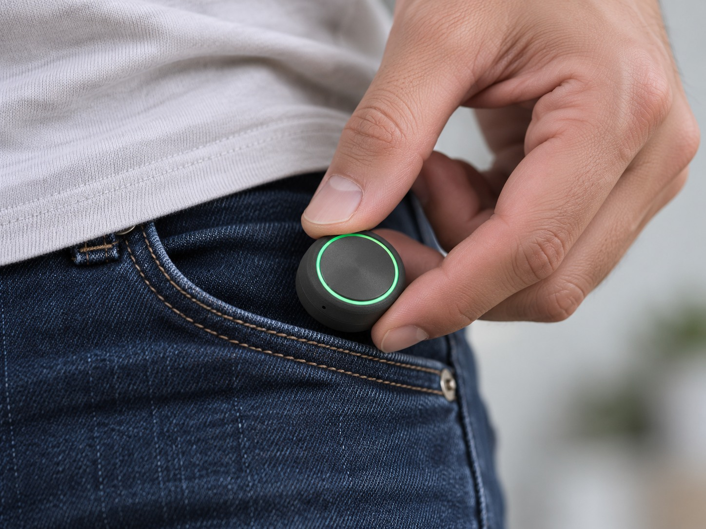

An idea on a walk. A question between meetings. A few words when your hands are full.
A thought, caught.
Hold the button and speak. Let go when you’re done.
Interactive concept preview. This page does not record audio.
Press and hold to try the feeling.
Make room for a little less.
On you. With you.
Wear it on a cord. Slip it onto a strap. Keep it in your pocket, ready for a thought.
Close at hand.
A simple cord. A quiet companion.

A gentle nudge.
A glance when something needs you.

Pocket a thought.
Take it out. Say a little. Carry on.
Concept photography. Wearable mounts and final size will follow physical fit testing.
A place for every thought.
A few Dots. Your own worlds.
Give each button a name and a purpose on your phone. Work in one. Life in another. A place for the ideas you don’t want to lose.
Work
“Summarize the customer call and draft my next steps.”
Example assignments. Pairing and routing are part of the proposed companion app.
Talk when you choose.
Hold to speak. Release to finish. The default idea is a microphone that stays off between presses, with a clear light whenever it captures.
Stay in a conversation.
An optional listening session could keep a conversation going. Start it deliberately, see the recording light, and stop it at any time. Runtime and background behavior need testing.
One idea. Two expressions.
A little. Or a little more.
A pure voice button. A larger version with a glanceable display and a small voice of its own.
Dot
One button. One light. Your voice.
Microphone and a tactile press-to-talk face
RGB ring for listening, progress, and attention
Bluetooth LE connection to a companion
Replies on your phone, Mac, or headphones
The smaller design direction. Your phone or Mac handles speech and the agent.
Dot Display
A little context. A brief reply.
The same voice-button idea and RGB ring
A mini OLED for a word or a status
A proposed speaker for short spoken replies
More room for the battery and electronics
A larger concept. Display fit, audio quality, and power use need bench testing.
Both are concepts, not shipping products. Images show the design direction; relative size is illustrative.
A connection to your OpenAGI.
Small button. Bigger picture.
Send a thought to an agent that has your context. Pick it up on your phone or Mac. When a decision needs you, Dot could bring it to your attention.